ALL PLACES DETAILS
Mirissa Beach
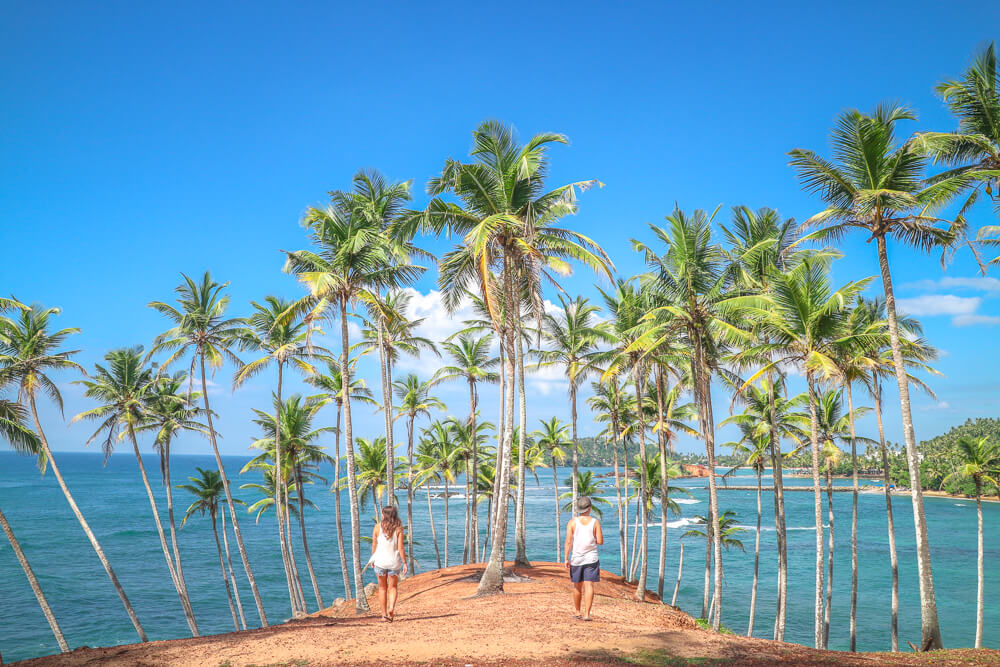
Hikkaduwa Beach
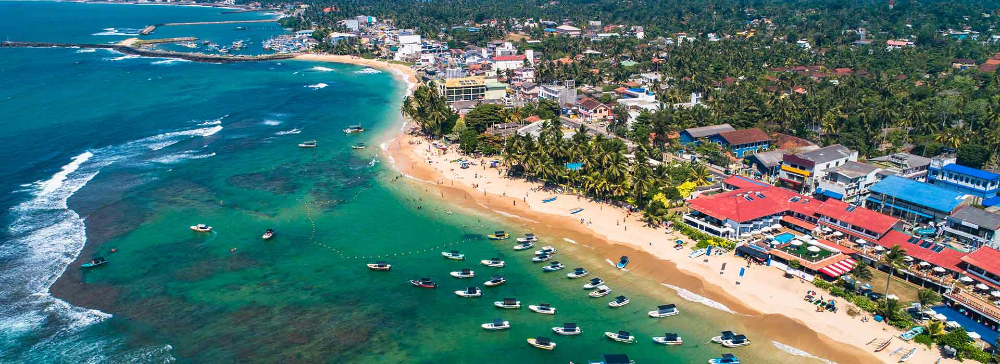
Arugam Bay
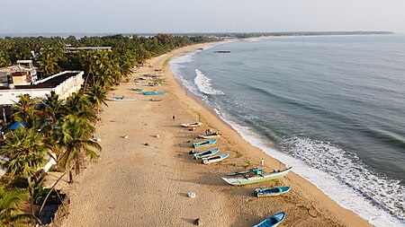
Bentota Beach
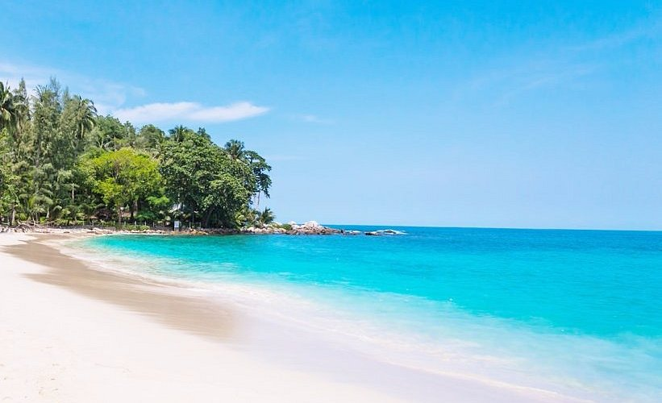
Nilaveli Beach
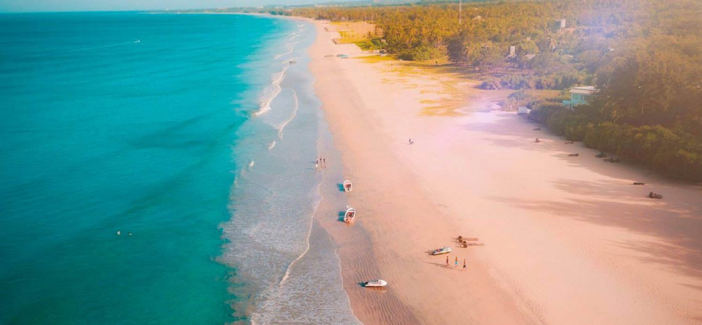
Unawatuna Beach
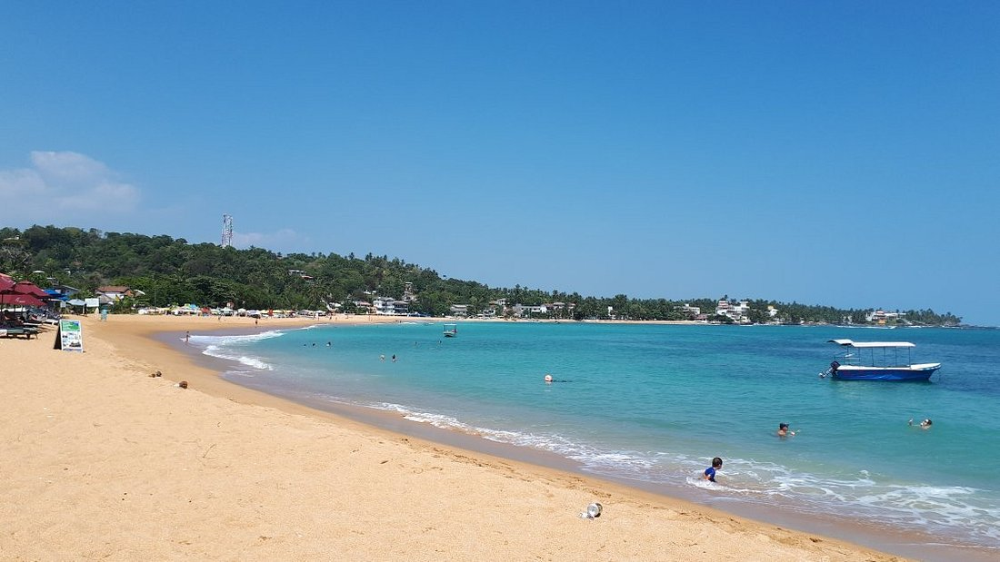
Surfing
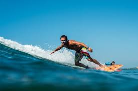
Scuba Diving & Snorkeling

White Water Rafting

Hiking & Trekking

Hot Air Ballooning

Yala National Park

Wilpattu National Park

Udawalawe National Park

Minneriya National Park

Kaudulla National Park

Horton Plains National Park

Sigiriya Rock Fortress

Anuradhapura
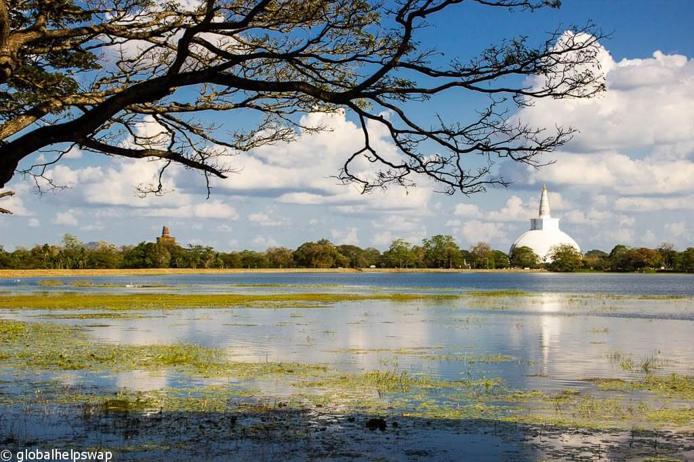
Polonnaruwa
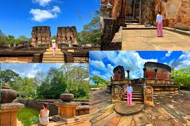
Temple of the Sacred Tooth Relic

Galle Fort

Mihintale
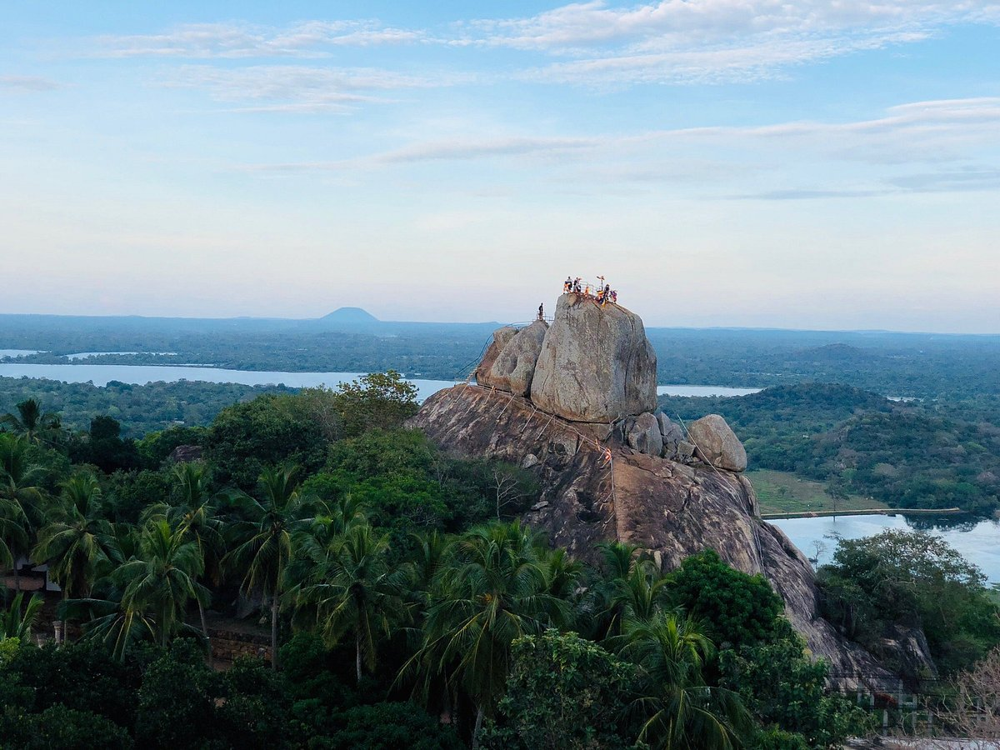
Bambarakanda Falls

Diyaluma Falls

Ravana Falls

Dunhinda Falls

Devon Falls

Laxapana Falls

Adam’s Peak

Pidurutalagala
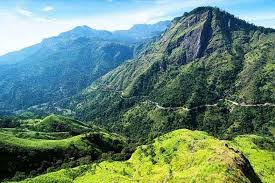
Kirigalpotta
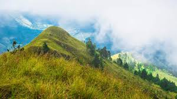
Namunukula
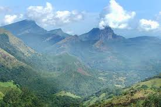
Ella Rock